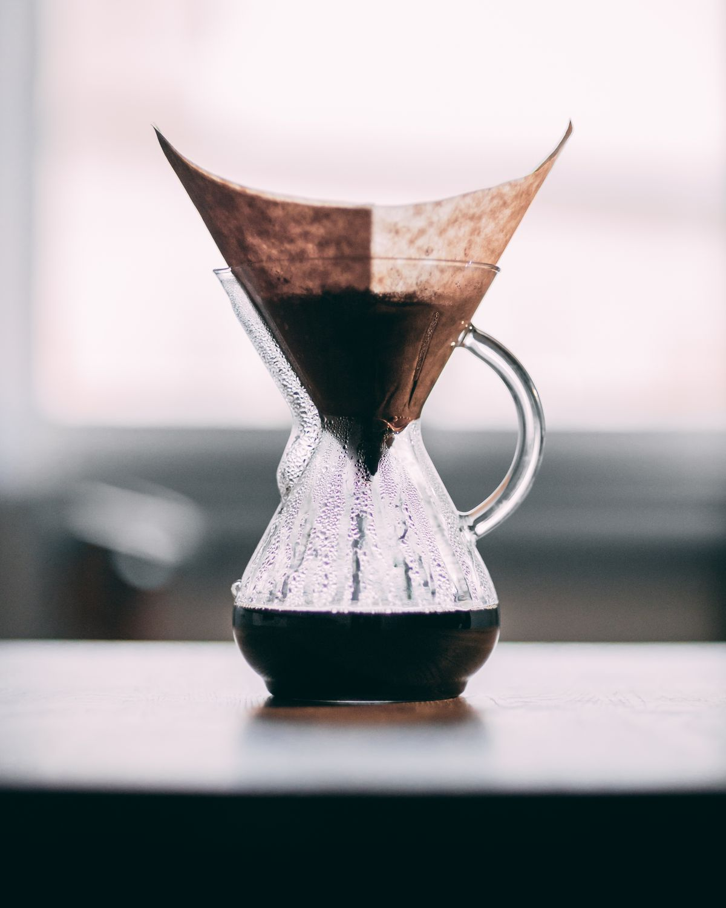
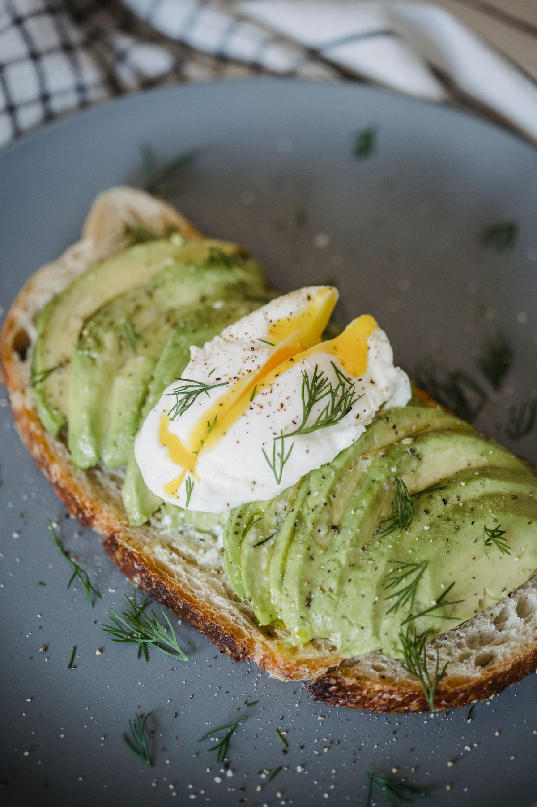
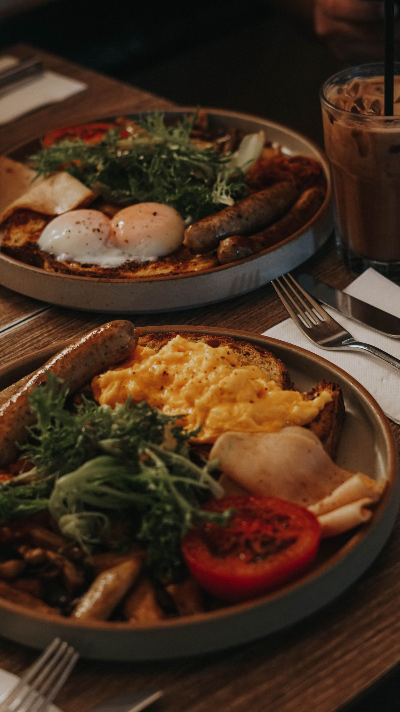

Stock photo: A glass Chemex pour-over brewer filled with coffee on a table by a window. This is not a photo of Maker's Cafe & Espresso Bar.
Downtown Cafe, Pensacola FL
Maker's Cafe & Espresso Bar
Handcrafted espresso, pour-over, and cold brew in downtown Pensacola, with avocado toast, banana bread, and a Saturday run club.
InWeekly 2024 Best of the Coast Best Coffee Shop

A family business downtown
Maker's Cafe is a family business in downtown Pensacola, named InWeekly 2024 Best of the Coast Best Coffee Shop.
Coffee and breakfast
Pour-over and cold brew
Avocado toast
Banana bread with whipped espresso mascarpone
Frittata
Olive oil cake
Strawberry matcha
Coffee catering
Coffee catering and a coffee cart for events.
Saturday Mile Maker's Run Club
A run club on Saturday mornings.
Catering and events
Maker's Cafe offers coffee catering and a coffee cart for events. Call (850) 776-6050 to ask about catering.
About
Maker's Cafe and Espresso Bar is a family business and coffee shop in downtown Pensacola, Florida, at 422 South Palafox Street. The cafe serves handcrafted espresso drinks, pour-over, and cold brew, with avocado toast, banana bread with whipped espresso mascarpone, frittata, olive oil cake, and strawberry matcha. Maker's Cafe offers coffee catering and a coffee cart for events, and runs the Saturday Mile Maker's Run Club. The cafe was named InWeekly 2024 Best of the Coast Best Coffee Shop. Hours are Monday to Saturday 7:00 AM to 5:00 PM; Sunday closed. Call (850) 776-6050 to ask about catering or an event.
Gallery

Photos on this page are stock photos of pour-over coffee, avocado toast, and brunch plates like the ones Maker's Cafe serves. They are not photos of the cafe.
Visit
Address: 422 S Palafox St, Pensacola, FL 32502
Hours: Monday to Saturday 7:00 AM to 5:00 PM. Sunday closed.
Phone: (850) 776-6050
Contact
Maker's Cafe & Espresso Bar serves Pensacola, FL. Questions? Call (850) 776-6050.